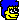

| 2012/04 20 Fri | 120回目*marika |
いつも読んでくださってる方、
初めて読んでくださった方、
コメントしてくださった方
ありがとうございます

まりかー

昨日はお仕事の前にママさんと古着屋さん見てきた。
楽しかったー

派手なシャツ買いました♪
柄がかわいいの。はではで。
難易度高いかもやけど、着こなせるように頑張るぜぇ。
今度写真撮るね
すばっっ
質問回答

...............
どーやったら質問答えてもらえるのかな？
 最近答えた同じ質問や、
最近答えた同じ質問や、
理由があってどうしても答えられなかったり、
答えに迷ってしまったりしたら、
とばすことがありますx(
なるべく質問回答できるようにします

お時間があれば過去の質問回答も見てください

メンバーの中で誰と仲いい？
いやーみんな仲いいっ

本当にみんな仲良し‼
仲良しすぎて困っちゃう

あっ、最近みゅうみゅうにてれてれしちゃう///いやん←
みゅうみゅうのツッコミがすきなの。変？笑
まりかって賢いの(笑)？
あほやよ‼
まりかっていい名前やけど
由来とか聞いたことある？
万理華
万...笑顔満開
理...賢く
華...華やかに
『一期一会』と言う言葉は好きですか？
すきです。
人と人の出会いを大切にしたいです＊
ひめたん（中元日芽香ちゃん）て、どんな女の子カナ？
妹♪
ひめかはいつもアイドルなの。
ちょっとしたしぐさとか、
目線とか全てかわいくて
見つめられたらノックアウト
 ぶー
ぶー
ぶー
ぎゅってくっついて離れない

ダンスは独特な雰囲気があって
惹きつけられます。
大きく踊って、かっこかわいい♪
とっても謙虚で、ほんまにしっかりしてる。
頭良い子です^^
ひめかとはガールズトークよくするんよ。
ひめかの広島弁すきや

てゆか、ひめかすきやっ
ひめきゅん

ひめかに見つめられたらみんなも
だよ‼
だよ‼
私もメンバー紹介しようかな

メンバー紹介第一回目はひめかになったね

握手会とかでコスプレでくるのどうですかね？(^O^)
わおっコスプレなんてしたことないよ‼
何が似合うかな⁇
あ、べびたんって楽器やるとしたら何やりたい？？
エアギターするから
ギターとかベースかな

楽器とか全然できんっ←
ピアノとか両手やと、
ねこふんじゃった♪しかひけんっっ笑
まりかちゃんは
他のアイドルは
なんのグループすきですか？
あんまりアイドルは詳しくないんだ
乃木坂ひとすじ。
毎回コメントしてるけど名前覚えられるの？
覚えてます‼
いつもコメントありがとうございます

ここまで

...............
宿題やろっと‼
では、明日も元気に頑張り、まりかっ

ほっぺ触りたいじゃろ～⁇
 にや
にや
にや
おやすみなさいな
まりか
コメント(123)
2012/04/20 00:00